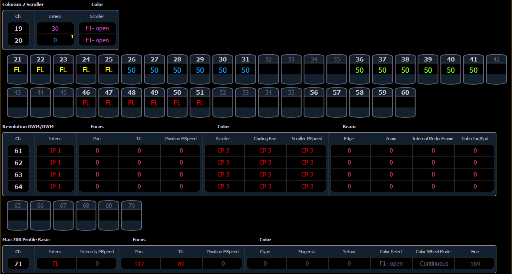

Table view is available in Live or Blind. Unlike summary view, table view displays the fixture type associated with channels and details about each channel’s category and parameter levels.
In Live, table view displays all active channel data being output from Element. In Blind, it will display all data for a single record target (cue, preset, palette) depending on what is viewed. In table view, focus, color, and beam information can be viewed in either a summary of these three categories or an expanded view to show all parameter data.
To expand a category to show detail, press the [Data] key and the associated parameter key. For example, [Data] [Color] will change the color category from a summary view to a detailed one. To collapse a category. press the [Data] key and the associated parameter key. You cannot hide a category from view.
When a category has been expanded, to hide or reveal only certain parameters, press and hold [Data] and then select the parameter buttons of the appropriate parameters in the CIA. The parameters will be displayed or suppressed depending on the current view.
Notice that when you hold down the [Data] button, the buttons of parameters that are currently selected for viewing will be highlighted in the CIA.
In the table, a slight space is provided between fixture types, giving a clear delineation between them. The name of the fixture type is displayed at the top of the section for that fixture.
Channels with only intensity parameters will display the same as in summary view.
